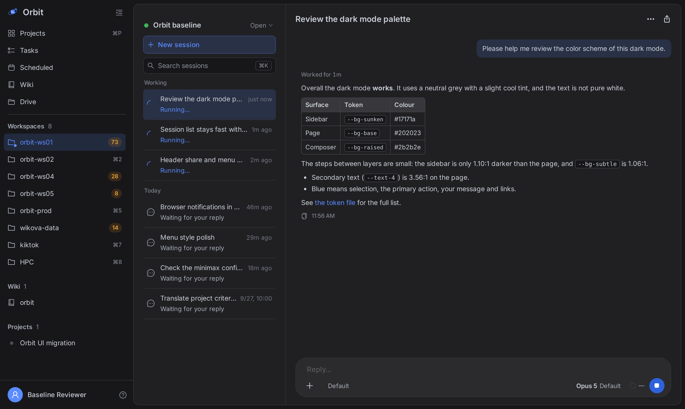
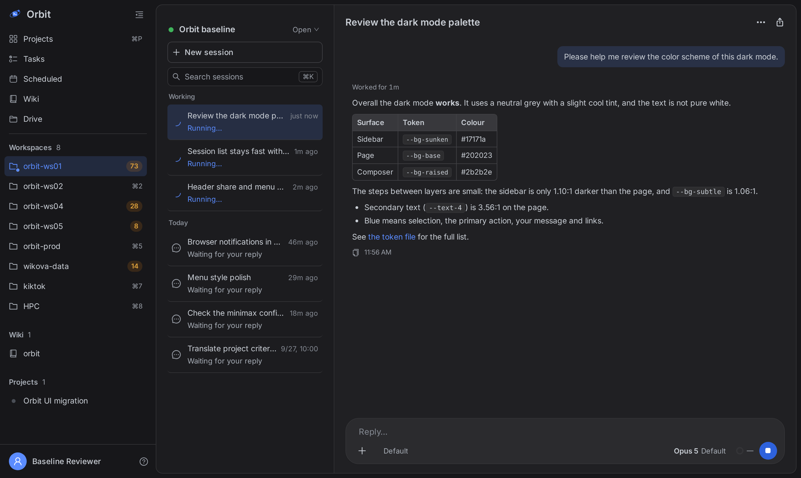
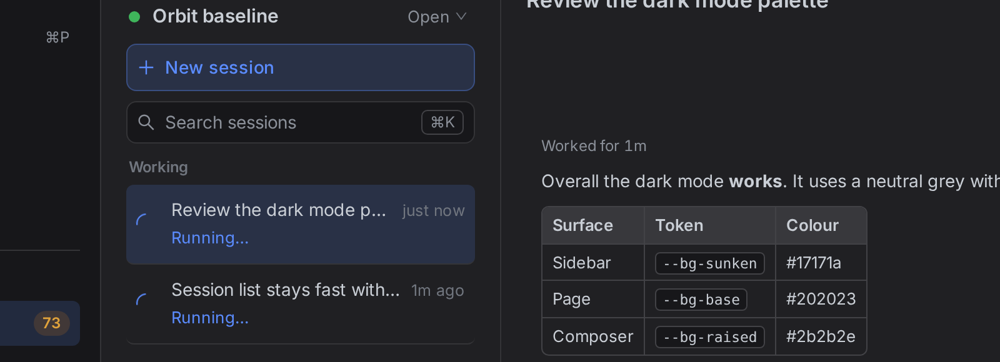
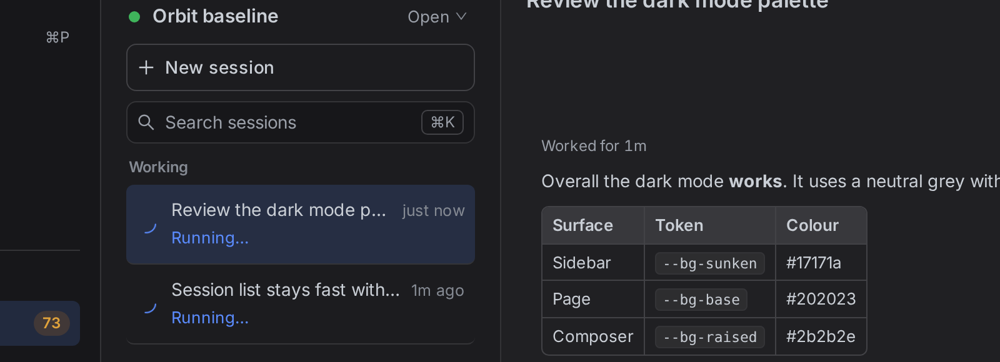
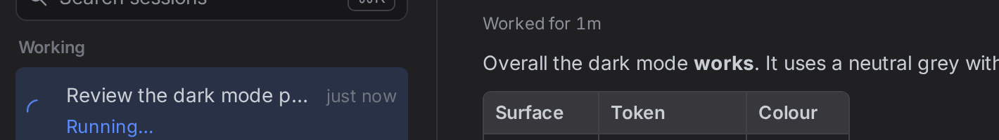
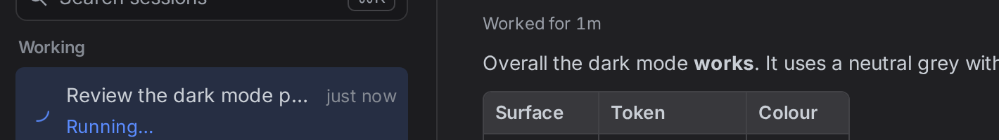
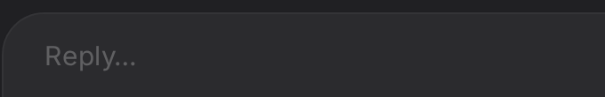
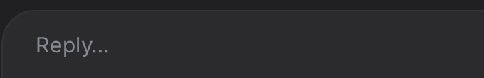
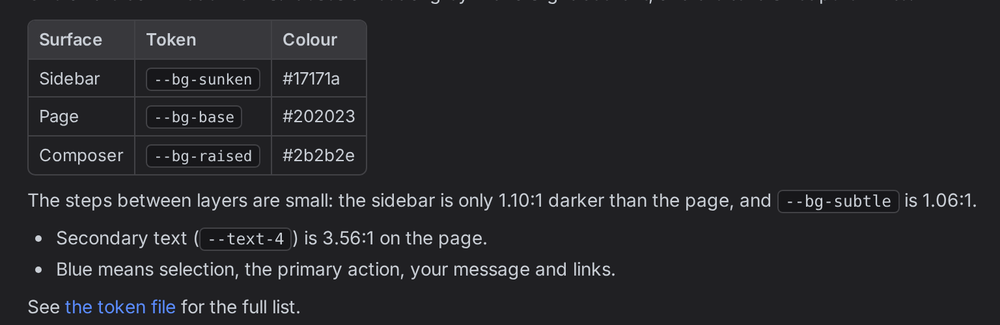
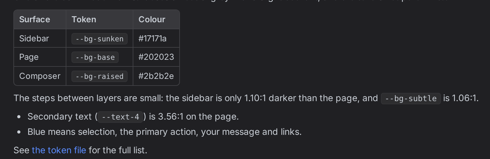

Both frames are the real web build in dark mode with the UI-test fixtures (1440×860). Frame ② is the same page with capture/proposal.css injected: four small changes, all dark-only, with light mode untouched. Colours and contrast ratios were measured, not estimated.










| # | What | Where (dark only) | Today | Proposal | Why |
|---|---|---|---|---|---|
| A | Session list background, and its sticky section heads | index.css desktop .workspace-split > .session-col, .session-section-head |
#202023 (same as the conversation) |
#1c1c1f |
Three even steps: sidebar #17171a → list → page #202023. Today the list and the conversation read as one slab. |
| B | --text-4 and --text-3; the composer's placeholder | index.css:62 dark block; .composer-field textarea::placeholder |
text-4 #71767f 3.56:1 page, 3.09 composertext-3 #8b9099 5.07 page, 4.02 your bubbleplaceholder #606062 ~2.6 |
text-4 #858a93 4.68 page, 4.90 listtext-3 #9a9fa8 6.11 page, 4.85 bubbleplaceholder = text-4, 4.07 composer |
Small text needs 4.5:1. text-3 moves up with text-4 so the two levels stay apart. text-2 #a7adb6 (7.19) stays. |
| C | New session button | .session-new, .session-new-kbd |
blue tint, blue border, blue text | transparent, --border, text-1; hover --bg-hover |
Blue already means selection, your messages and links. A blue button above the list outweighs the selected row. |
| D | Inline code in messages | .md code (not pre code) |
--bg-sunken + --border | rgba(255,255,255,.06) + --border-subtle |
Lighter than the text around it, as on most dark surfaces. Also works on the composer and on cards. |
These are needs-you counts: sessions blocked on an approval from you (TasksSidePanel.tsx:790, .tp-count.needs-you). So amber is the right meaning. The question is only how loud they should be when many workspaces carry one.
No change. Something waiting on you should be loud. If 73 feels like noise, that's the count's problem (stale approvals), not the colour's.
Quieter in a long list. It still reads as "needs you" by colour, but loses its shape at a glance, and the collapsed rail's badge would no longer match.
components/ui/foundation.css:95 has its own blues (#2e62dc, #3c89e8, #223d7e), greens and amber, alongside --brand #5b8cff and friends. Nothing on this screen changes visibly, so it gets its own small task: point the --orbit-* dark values at the index.css tokens.src/web/src/index.css only: the dark token block, plus four dark-scoped rules for A, C and D. No component changes. iOS, macOS and Android aren't covered by this board.